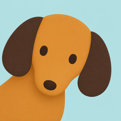

<!doctype html>
<html lang="zh-CN">
<meta charset="utf-8">
<meta name="viewport" content="width=device-width, initial-scale=1">
<title>Frost · 小狗说话动效</title>
<style>
  * { box-sizing: border-box; }
  body { margin: 0; min-height: 100vh; background: #f5f0e7; color: #3b2b20; font-family: -apple-system, BlinkMacSystemFont, 'PingFang SC', sans-serif; }
  main { max-width: 780px; margin: auto; padding: 48px 24px 36px; text-align: center; }
  .eyebrow { font: 11px ui-monospace, monospace; letter-spacing: .24em; color: #8a735e; }
  h1 { font-size: clamp(26px, 5vw, 38px); font-weight: 600; margin: 14px 0 10px; letter-spacing: -.04em; }
  .intro { color: #8a735e; margin: 0 0 32px; font-size: 14px; }
  .screen { width: min(360px, 82vw); aspect-ratio: 1; margin: auto; overflow: hidden; border-radius: 50%; background: #b7e0e1; box-shadow: 0 20px 48px #795b3520, 0 0 0 9px #322c29, 0 0 0 11px #625b54; }
  .screen img { display: block; width: 100%; height: 100%; object-fit: cover; transform-origin: 50% 87.5%; }
  .caption { color: #8a735e; font-size: 11px; margin: 24px 0 20px; }
  .controls { display: flex; justify-content: center; gap: 8px; }
  button { appearance: none; border: 1px solid #d6cbbb; border-radius: 22px; background: transparent; padding: 11px 22px; cursor: pointer; font: inherit; font-size: 13px; color: #66503b; }
  button[aria-pressed="true"] { background: #3b2b20; border-color: #3b2b20; color: #fff8ed; }
  button:focus-visible { outline: 3px solid #c78138; outline-offset: 3px; }
  .details { margin: 32px auto 0; max-width: 480px; display: grid; grid-template-columns: repeat(3, 1fr); border-top: 1px solid #ddd2c3; padding-top: 20px; }
  .details strong { font-size: 17px; display: block; font-weight: 500; }
  .details span { font-size: 11px; color: #8a735e; display: block; margin-top: 5px; }
  footer { color: #998774; font-size: 11px; line-height: 1.8; margin-top: 28px; }
  a { color: inherit; text-underline-offset: 3px; }
  @media (prefers-reduced-motion: reduce) { * { scroll-behavior: auto; } }
</style>
<main>
  <div class="eyebrow">FROST / MOTION STUDY 02</div>
  <h1>小狗，有话说。</h1>
  <p class="intro">轻轻摇，慢慢呼吸，再偷偷眨一只眼。</p>
  <div class="screen"></div>
  <p class="caption" id="state" aria-live="polite">静态原图</p>
  <div class="controls">
    <button id="talk" type="button" aria-pressed="false">循环动效</button>
    <button id="rest" type="button" aria-pressed="true">静态对比</button>
  </div>
  <div class="details">
    <div><strong>240 × 240</strong><span>圆屏满幅</span></div>
    <div><strong>±0.8°</strong><span>轻摇 · 4.8 秒一循环</span></div>
    <div><strong>离线内置</strong><span>小狗无需下载</span></div>
  </div>
  <footer>此处为动效示意，不是实机录屏；硬件帧率以实测为准。<br>单双眼眯眼交替，各停留约 1.6 秒；录音或显示其他技能时暂停。<br>沿用五张表情图，身体轻摇不增加图片；圆屏边框保持固定。<br>
    <a href="frost-speaking.gif" download>下载原表情 GIF（不含摇摆）</a> · <a href="manifest.json">素材清单</a> · <a href="prompts.json">原提示词</a> · <a href="wink-prompt.json">单眼表情提示词</a>
  </footer>
</main>
<script type="module">
  import { names, poseAt, frameAt } from './motion.mjs';
  const portrait = document.querySelector('#portrait');
  const talk = document.querySelector('#talk');
  const rest = document.querySelector('#rest');
  const reducedMotion = matchMedia('(prefers-reduced-motion: reduce)');
  let request = 0, started = 0, lastBody = -80, previousFrame = -1;
  await Promise.all(names.map(async name => {
    const image = new Image(); image.src = `hardware/${name}.jpg`; await image.decode();
  }));
  function animate(now) {
    const elapsed = now - started;
    const frame = frameAt(elapsed);
    if (frame !== previousFrame) {
      portrait.src = `hardware/${names[frame]}.jpg`;
      previousFrame = frame;
    }
    if (elapsed - lastBody >= 80) {
      const pose = poseAt(elapsed);
      portrait.style.transform = `rotate(${pose.angle / 10}deg) scale(${pose.zoom / 256})`;
      lastBody = elapsed;
    }
    request = requestAnimationFrame(animate);
  }
  function show(speaking) {
    cancelAnimationFrame(request);
    started = performance.now(); lastBody = -80; previousFrame = -1;
    portrait.src = 'hardware/rest.jpg'; portrait.style.transform = 'none';
    if (speaking) request = requestAnimationFrame(animate);
    portrait.alt = speaking ? 'Frost 小狗轻摇呼吸、开合嘴、双眼眯眼和单眼眨眼的循环动效' : 'Frost 小狗静态圆屏头像';
    talk.setAttribute('aria-pressed', String(speaking));
    rest.setAttribute('aria-pressed', String(!speaking));
    document.querySelector('#state').textContent = speaking ? '轻摇 + 呼吸 · 动嘴 · 双眼 / 单眼眯眼各 1.6 秒' : '静态原图';
  }
  talk.addEventListener('click', () => show(true));
  rest.addEventListener('click', () => show(false));
  reducedMotion.addEventListener('change', event => { if (event.matches) show(false); });
  if (!reducedMotion.matches) show(true);
</script>
</html>
